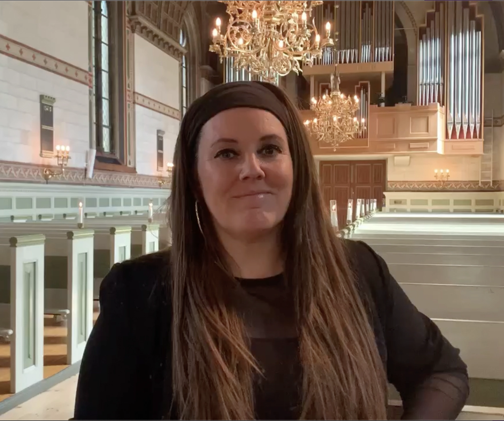
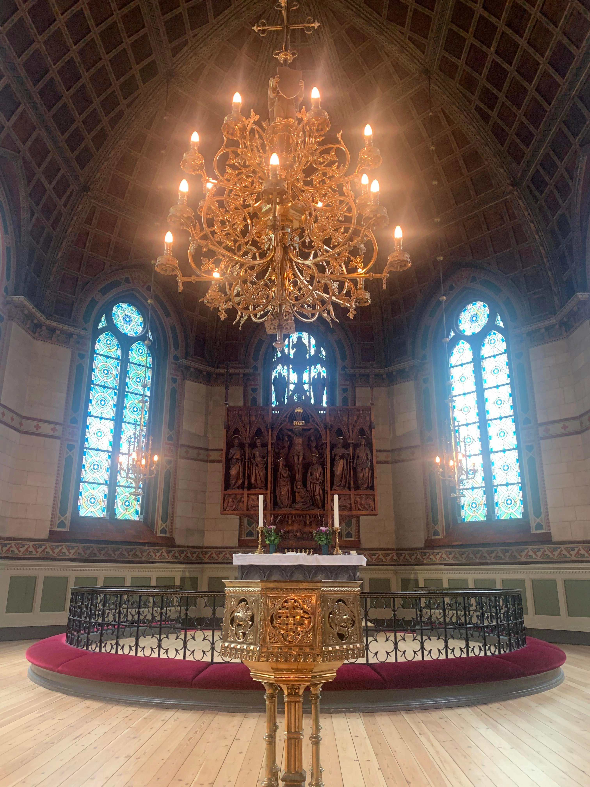
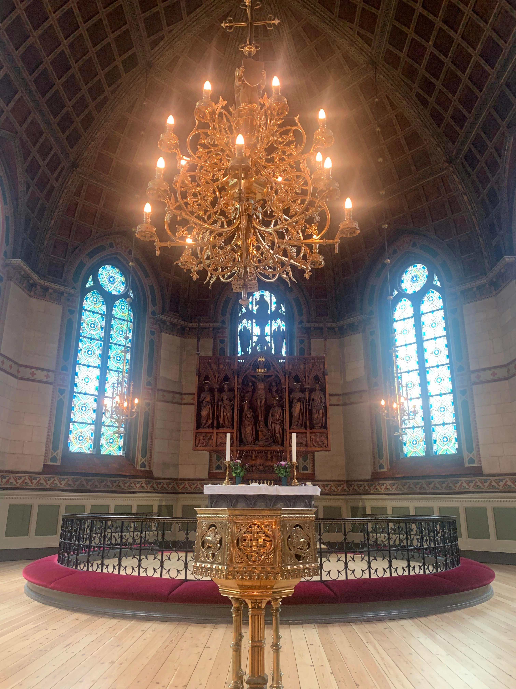
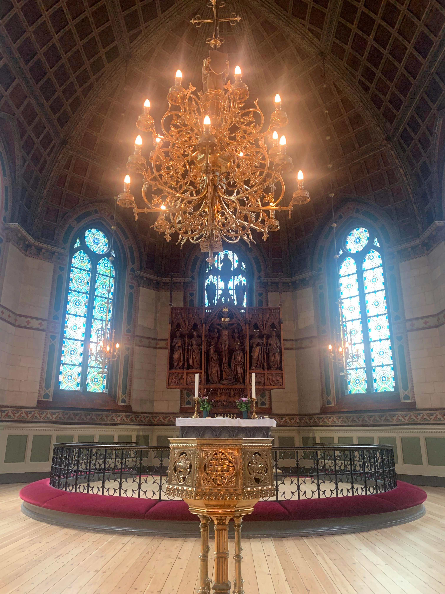

Linda Andrews
Passion: At synge
Linda Andrews lever og ånder for at synge.
Hun har sunget siden hun var barn, og har aldrig slippet drømmen om, at ende med at leve af det. Det gjorde hun noget ved, da hun meldte sig til x-factor - og vandt, i 2009.
"Selvom jeg ikke kunne leve af det, så ville jeg stadig synge."
Vi mødte hende til et interview i en kirke på Nørrebro, hvor hun netop havde sunget til et bryllup. I dette interview kan du få et større indblik i hendes karriere som sanger.

 


